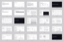

- Role
- UX Design Director at AREA 17
- Activities
- Research, Discovery, UX & Content Strategy, Interaction Design.
Design principle
The tension in unifying communication and utilitarian resources was embraced as an overarching idea: to conciliate structured information with impactful imagery as a way to express the visual language of The New York Times.
We designed a navigation system limited to the primary entry points both for findability and brand messaging, supported by a more utilitarian view with a complete sitemap. This progressive disclosure connects everything back to the design principle we defined at the beginning by keeping a balanced visual harmony.
A systematic approach
Behind all design systems there is a content model with patterns of representation. The first step was to map all the information pieces the user might need, then design a modular system to express it.

The NYTCO UX foundation presentation deck
The previous website was built as it grew, with a set of ad-hoc and custom templates.
I ended up defining a simpler system based on the homepage completed with three primary formats: sections, stories and resources, along with summarizing the set of content modules that could be used within these different pages.
Putting everything together
From this streamlined module organization, the visual designer was able to unpack a solid design system to fully express the New York Times brand values.